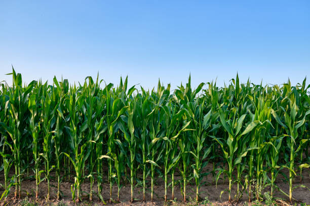
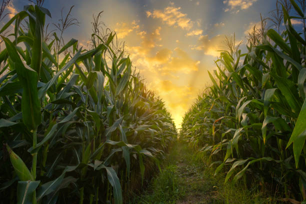
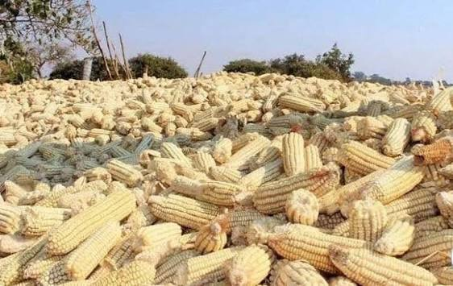

Maize Production
Usually covers around 4 acres of the farm per season.

- Growth Duration: 90 - 120 days depending on variety.
- Growing Season: Warm Season(optimal temparature: 18-27°c).
- Soil Type: Well-Drained Loamy Soil,pH 5.8-7.0
- Spacing: 75cm between rows,25cm between plants
- Fertilizer:High nitrogen fertilizer(DAP at planting, CAN at top-dress)
- Pests & Diseases:Fall Armyworm (Spodoptera frugiperda), Stem Borers (Chilo partellus, Busseola fusca),Cutworms .
- Yield:20-40 bags(90 kg) per acre with good management.
Farm Gallery & Harvesting


